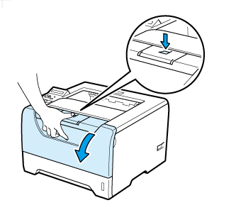
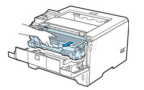
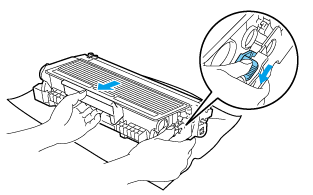
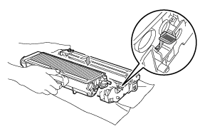
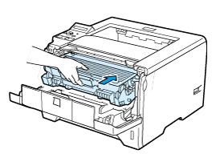
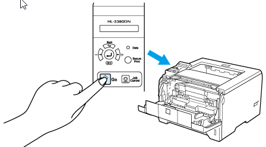

1. zaznajomienie z czynnikami środowiska pracy mogącymi powodować zagrożenie dla bezpieczeństwa
2. poznanie przepisów oraz zasad BHP pracy w zakresie niezbędnym do wykonywania pracy w zakładzie pracy
3. nabycie umiejętności wykonywania pracy w sposób bezpieczny dla siebie i innych
4. Zapoznanie z moimi prawami
5. Zasady postępowania w sytuacjach awaryjnych
6. zasady postępowania podczas wypadku
1. Z jakich urządzeń korzysta firma
2. Z jakiego oprogramowania korzysta
3. Oprowadzenie po serwerowni
4. Oprowadzenie po jednej z hal firmy
Z jednej strony standard A , z drugiej standard B.
Standard B (biało-pomarańczowy,pomarańczowy,biało-zielony,niebieski,biało-niebieski,zielony,biało-brązowy,brązowy)
Standard A (biało-zielony,zielony,biało-pomarańczowy,niebieski,biało-niebieski,pomarańczowy,biało-brązowy,brązowy)
Funkcja jeżeli - zwraca jedną z dwóch wartości, w zależności od wyniku postawionego warunku
Funkcja średnia - używana do wyliczenia średniej z liczb ze wskazanych komórek
Funkcja suma - używana do sumowania liczb ze wskazanych komórek
Funkcja iloczyn - oblicza iloczyn liczb ze wskazanych komórek lub podanych bezpośrednio w formule
Funckja indeks - zwraca wartość z tabeli znajdującą się na przecięciu podanego numeru wiersza i numeru kolumny
Krok 1: Klikamy przycisk "Start" nastepnie wybieramy "Uruchom". W polu "Otwórz" wpisujemy CMD
Krok 2: W oknie konsoli wpisujemy polecenie "ipconfig", wynikiem polecenia jest widok konfiguracji karty LAN.
Krok 3: Wartość pola "IP Address" jest adresem komputera
Krok 1: Klikamy prawym klawiszem myszy na Mój komputer(na pulpicie lub w menu Start) i wybieramy "Mapuj dysk sieciowy"
Krok 2: W polu Dysk wybieramy Z:
Krok 3: Wybieramy folder
Krok 4: Upewniamy się, że polece wyboru "Połącz ponownie przy logowaniu" jest zaznaczone i klikamy OK
Krok 1: Prawym przyciskiem myszy klikamy na "Mój komputer"
Krok 2: Wybieramy "Właściwości"
Krok 3: Nazwe swojego komputera znajdziesz na dole
Krok 1: Kliknij "Start"
Krok 2: Wpisz nazwe swojego komputera a przed nią wpisz dwa razy
Krok 3: Naciśnij "Enter"
Krok 4: Widzimy nasz folder udostępniony
Krok 1: Kliknij prawym przyciskiem myszy na folder
Krok 2: Udostępnianie --> Udostepnianie zaawansowane
Krok 3: Kliknij "Uprawnienia"
Krok 4: Kliknij "Dodaj"
Krok 5: Wybierz użytkownika
Krok 6: "Zastosuj" i "OK"
Krok 7: Kliknij na "Wszyscy" i "Usuń"
Krok 1: Klikamy prawym przyciskiem myszy na ikonie "Moje miejsce sieciowe" i wybieramy właściwości"
Krok 2: Z menu "Widok" wybieramy szczegóły". Następnie sprawdzamy pole "Stan" Połaczenia Sieci Lokalnej
Jesli stan równy jest "Połączono" nasze połączenie działa poprawnie
1. Wymiana dysku SSD w mini komputerze
2. Wymiana zepsutego minikomputera w telewizorze pokazującym postępy produkcji
1. Z kim firma współpracuje
2. Infrastruktura firmy
3. Kto pracuje na jakim stanowisku i za co jest głównie odpowiedzialny
Integracja ze wszystkimi usługami Cisco Spark
Idealny do wideokonferencji z maksymalnie 14 uczestnikami
System łączy się z chmurą Cisco Spark przez Wi-Fi, więc nie ma potrzeby stosowania przewodów
Wbudowana wysokiej jakości kamera wideo z funkcją automatycznego śledzenia
Wbudowana matryca mikrofonów i głośniki zapewniają idealną ścieżkę dźwiękową
Funkcja podwójnego ekranu
Możliwość połączenia z dwoma źródłami treści
Możliwość sterowania systemem za pomocą urządzeń mobilnych
Możliwość bezprzewodowej wymiany danych z urządzeniami mobilnymi i laptopami
Wbudowana wysokiej jakości kamera wideo z funkcją automatycznego śledzenia
Krok 1: Zdecydowaliśmy gdzie zamontujemy urządzenie
Krok 2: Zamontowaliśmy uchwyt ścienny Quad Camera
Krok 3: Przymocowaliśmy poczwórną kamerę do wspornika
Krok 4: Podłączyliśmy kable kodeków
Krok 5: Podłączyliśmy kable poczwórnej kamery
Krok 6: Zabraliśmy sie za konfiguracje oprogramowania
Pisałem stronę, w której opisuje co robiłem na praktykach każdego dnia
1. Wyjąć kabel sieciowy ze skanera
2. Podłączyć działący skaner
Strona html jest dzielona na niewidoczne pudełka
Każde pudełko elementu ma trzy właściwości, które można modyfikować w celu określenia jego wyglądu
Obramowanie - oddziela brzeg jednego pudełkaod drugiego
Margines - to obszar znajdujący się na zewnątrz obramowania elementu
Wypełnienie - to odstęp pomiędzy obramowaniem elementu a jego zawartością
1. Co to id i do czego służy
Jest to unikalny identyfikator elementu html
W przeciwieństwie do klas, id można użyć tylko raz
2. Jak działają klasy w css
Składnia klasy : .nazwaklasy { właściwości stylu }
Przyład w CSS: span.classy { background-color: DodgerBlue;}
Przykład w HTML: span class="classy">Przykładowy tekst.
3. Instalacja przydatnych wtyczek do VS Code
- Live Server - pokazuje na bieżąco jak wyglada strona
- Prettier - pokazuje błędy w kodzie
Zapoznanie się ze znacznikami
html- Dokument HTML
DOCTYPE- typ dokumentu
head - informacje o dokumencie
title - tytuł dokumentu
body - ciało dokumentu
h1 do h6 - to nagłówki
p - paragraf
br - to przejście do nowej lini
hr - linia pozioma
abbr - Akronim
address - Informacje kontaktowe o autorze dokumentu
b -Pogrubienie tekstu
bdi - Służy do odizolowania fragmentu tekstu, który może być zinterpretowany przez przeglądarkę do wyświetlenia w nieodpowiednim kierunku (np. tekst w języku arabskim)
bdo - Odwrócenie kierunku tekstu (np. cokolwiek)
blockquote - Cytowane źródło
cite - Tytuł cytowanej pracy
code - Fragment kodu (języki programowania)
del - Tekst który został usunięty z dokumentu
dfn - Definiowana wartość, możliwość odniesienie do niej za pomocą #kotwicy
em - Uwypuklenie fragmentu tekstu
i - Tekst pochylony
ins - Tekst, który został dodany do dokumentu (zob. )
kbd - Oznaczenie tekstu do wpisania, np. Wpisz cmd, a następnie…
mark - Oznaczony tekst
meter - Graficzne przedstawienie zakresu
pre - Tekst preformatowany, interpretuje spację, tabulator oraz znak nowej linii
progress - Graficzne przedstawienie postępu zadania
s - Tekst który przestał być poprawny
samp - Przykładowy wynik działania programu komputerowego
small - Pomniejszony tekst
strong - Ważny tekst
sub - Tekst w indeksie dolnym
sup - Tekst w indeksie górnym
template - Szablon
time - Data / czas
u - Tekst, który ma być stylistycznie inny od reszty tekstu, podkreślenie
var - Zmienna
wbr - Możliwe przejście do nowej linii, np. przy ciągu znaków dłuższym od ilości znaków na linii ekranu
przepisz do 09-11
Przepisz index 2 html
Przepisz index 3
Stworzyłem strone w ktorej po kliknieciu przenosi nas do wyslania maila, przenosi nas do strony Lg Electronics, do tabeli i formularza i pokazuje nam jak dojechac do lg electronics
Czyszczenie komputerów z lini prodykcjnej A06
Zainstalowanie i konfiguracja Windowsa 10 na sześciu komputerach z lini produkcyjnej A06
Czyszczenie komputerów z lini prodykcjnej A10
Zainstalowanie i konfiguracja Windowsa 10 na trzynastu komputerach z lini produkcyjnej A10
W portfolio umieściłem miejsce na informacje o mnie, moje umiejętności, miejsce na moje przyszłe projekty i formularz do kontaktu ze mną. Umieściłem też kontakt ze mną przez media społecznościowe takie jak: twitter,instagram,facebook


A Git to system kontroli wersji
Nauczyłem się tworzyć i dodawać pliki do repozytoriów. Nauczyłem się pobierać repozytoria na całkiem nowym komputerze, dzięki czemu moge odrazu kontynuować pracę nad projektem
Przypomniałem sobie symbole urządzeń techniki komputerowej
Odłączyłem kabel VGA D-Sub
Odłączyłem kabel zasilania
Odkręciłem śrubki mocujące monitor do uchwytu
Zdjąłem monitor
Przykręciłem działający monitor
Podpiąłem kabel zasilania i VGA D-Sub
Wytłumaczono mi różnice między grafika wektorową i rastrową
W odróżnieniu od grafiki rastrowej, skalę obiektów wykonanych w grafice wektorowej można powiększać lub zmieniać bez uszczerbku na jakości
Obraz taki może być wyświetlany w maksymalnej dla nośnika rozdzielczości
W odróżnieniu od grafiki rastrowej obracanie obrazu nie zniekształca go, powodując pogarszanie go
Zebraliśmy komputery z lini produkcyjnej A04
Przeczyściliśmy te komputery
Zainstalowaliśmy na nich windowsa 10
Co to są zmienne
Zmienne to coś w rodzaju "pudełek", w których pod nazwami możemy przechowywać różne rzeczy takie jak liczby, teksty, obiekty itp.
Jak deklarować zmienne
Aby zadeklarować zmienną, powinniśmy posłużyć się jednym ze słów kluczowych. Do stworzenia zmiennej w JavaScript kiedyś używało się słowa var lecz teraz lepiej używać let albo const. Zmienną "let" możemy nadpisać ale "const" jest stałą i nie możemy jej nadpisać
Różnią się głównie zasięgiem oraz tym, że w jednym zasięgu (bloku) nie możemy ponownie tworzyć zmiennych o tej samej nazwie
Pętlę w programowaniu pozwalają nam wykonywać dany kod zadaną ilość razy
Najczęściej do pętli stosuje sie "for"
for (zainicjowanie_zmiennych; warunek_kończący_wykonywanie_pętli; zmiana_zmiennych) { kod który zostanie wykonany pewną ilość razy }
W pętli tego typu nie definiujemy ani początkowego licznika, ani nie definiujemy zmiany licznika
while (wyrażenie_sprawdzające_zakończenie_pętli) {...fragment kody który będzie powtarzany}
Musimy te rzeczy zrobić ręcznie:
let i = 1; while (i <= 100) { console.log("Nie będę..."); i++; }
Pętle "while" zazwyczaj stosuję się w sytuacjach kiedy nie wiemy dokładnie ile powtórzeń ma się wykonać
Nacisnąłem przycisk zwalniający i otworzyłem przednią pokrywę 
Wyjąłem zespół bębna i kasetę tonera 
Wcisnąłem niebieską dźwignię blokady i wyjąłem kasetę tonera 
Umieściłem kasetę tonera w nowym zespole bębna tak, aby zatrzasnęła się we właściwym położeniu. Niebieska dźwignia blokady automatycznie podniosła się do góry 
Włóżyłem zespół bębna i kasetę tonera do drukarki 
Musiałem przytrzymać przycisk Go dopóki na wyświetlaczu LCD pokaże się komunikat BĘBEN CZYSTY 
Zamknąłem przednią pokrywę
Procesor częstotliwość, mnożnik, pamięć cache, typ obudowy, napięcie zasilania, technologia wykonania, pobór mocy.
Płyta główna format, architektura, rodzaj chipsetu, liczba złączy i gniazd, typ zasilania, rodzaj gniazda pod CPU
Dysk twardy pojemność, prędkość obrotowa, pamięć cache, interfejs transferu danych, pobór mocy, czas dostępu, poziom hałasu
Karta graficzna rodzaj GPU, standard interfejsu szyny (AGP,PCI-E), pobór mocy, rodzaje złączy l/O, technologie i funkcje
Karta dźwiękowa procesor dźwięku, interfejs szyny (PCI, PCI-E), rodzaje złączy l/O, rodzaj chipsetu, częstotliwość próbkowania, dodatkowe technologie lub funkcje, charakterystyka dźwięku
Napęd optyczny interfejs transferu danych, prędkości odtwarzania i nagrywania, technologie i funkcje
Moduły pamięci RAM pojemność modułu, częstotliwość pracy, typ modułu, typ pamięci, napięcie zasilania, czas dostępu, liczba styków
Monitor przekątna ekranu, rozdzielczość, częstotliwość odświeżania obrazu, pobór mocy, technologie i dodatkowe funkcje, poziom kontrastu
Zasilacz moc wyjściowa (maksymalna, ciągła), sprawność, napięcie zasilania (wejściowe i wyjściowe), technologie zabezpieczeń i stabilizujące napięcie, poziom hałasu
Nacisnąć kombinacje przycisków "windows" + "r"
Wpisać devmgmt.msc
Włączy nam sie menadżer urządzeń, w którym możemy zobaczyć parametry naszego komputera